CODING AGENTS AS PIXEL WORLD MODELS
traex/DeepSeek-V4.1-Flash · 0172
点击播放 · 原生 RGB 像素
逐轮保存的候选
回放视频、检查图与代码变化。
每份候选均可单独播放。实际图片检查记录在下方工具轨迹中。
候选 01播放与检查图
点击播放 · 原生 RGB 像素

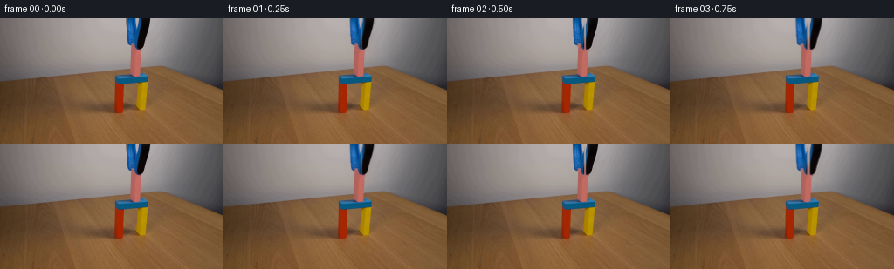
展开代码变化
--- 上一保存版本
+++ 本次保存版本
@@ -0,0 +1,178 @@
+from pathlib import Path
+
+import cv2
+import numpy as np
+from PIL import Image
+
+import artifact_io
+
+
+CASE_DIR = Path(__file__).resolve().parent
+N_FRAMES = 20
+
+
+def _tool_mask(rgb):
+ hsv = cv2.cvtColor(rgb, cv2.COLOR_RGB2HSV)
+ height, width = rgb.shape[:2]
+ yy, xx = np.indices((height, width))
+
+ roi = (xx >= 140) & (xx <= 174) & (yy <= 38)
+ blue = (
+ (hsv[:, :, 0] >= 90)
+ & (hsv[:, :, 0] <= 140)
+ & (hsv[:, :, 1] >= 40)
+ & (hsv[:, :, 2] >= 20)
+ )
+ black = hsv[:, :, 2] < 72
+ shaded_right_jaw = (
+ (xx >= 157)
+ & (yy <= 36)
+ & (hsv[:, :, 2] < 132)
+ & (hsv[:, :, 1] < 90)
+ )
+ pink = (
+ (((hsv[:, :, 0] >= 160) | (hsv[:, :, 0] <= 8)))
+ & (hsv[:, :, 1] >= 30)
+ & (hsv[:, :, 2] >= 72)
+ )
+
+ mask = roi & (blue | black | shaded_right_jaw) & ~pink
+ mask = cv2.morphologyEx(mask.astype(np.uint8), cv2.MORPH_CLOSE, np.ones((3, 3), np.uint8))
+ mask = cv2.dilate(mask, np.ones((2, 2), np.uint8), iterations=1)
+ return mask
+
+
+def _clean_plate(rgb, mask):
+ clean = rgb.copy()
+ inpaint_mask = cv2.dilate(mask, np.ones((3, 3), np.uint8), iterations=1)
+ clean = cv2.inpaint(clean, inpaint_mask, 5, cv2.INPAINT_TELEA)
+
+ # The wall is smooth; a restrained low-pass pass removes inpainting streaks.
+ wall_region = inpaint_mask > 0
+ soft = cv2.GaussianBlur(clean, (0, 0), 1.4)
+ clean[wall_region] = soft[wall_region]
+ return clean
+
+
+def _soft_alpha(mask):
+ alpha = cv2.GaussianBlur(mask.astype(np.float32), (0, 0), 0.55)
+ alpha = np.clip(alpha, 0.0, 1.0)
+ alpha[mask > 0] = np.maximum(alpha[mask > 0], 0.82)
+ return alpha
+
+
+def _shift_layer(rgb, alpha, dx, dy):
+ matrix = np.array([[1.0, 0.0, dx], [0.0, 1.0, dy]], dtype=np.float32)
+ shifted_rgb = cv2.warpAffine(
+ rgb,
+ matrix,
+ (rgb.shape[1], rgb.shape[0]),
+ flags=cv2.INTER_LINEAR,
+ borderMode=cv2.BORDER_CONSTANT,
+ borderValue=(0, 0, 0),
+ )
+ shifted_alpha = cv2.warpAffine(
+ alpha,
+ matrix,
+ (alpha.shape[1], alpha.shape[0]),
+ flags=cv2.INTER_LINEAR,
+ borderMode=cv2.BORDER_CONSTANT,
+ borderValue=0.0,
+ )
+ return shifted_rgb, shifted_alpha
+
+
+def _composite(background, foreground, alpha):
+ a = alpha[:, :, None].astype(np.float32)
+ result = background.astype(np.float32) * (1.0 - a) + foreground.astype(np.float32) * a
+ return np.clip(result, 0, 255).astype(np.uint8)
+
+
+def _shadow(background, alpha, dx, dy):
+ shifted = cv2.warpAffine(
+ alpha,
+ np.array([[1.0, 0.0, dx], [0.0, 1.0, dy]], dtype=np.float32),
+ (alpha.shape[1], alpha.shape[0]),
+ flags=cv2.INTER_LINEAR,
+ borderMode=cv2.BORDER_CONSTANT,
+ borderValue=0.0,
+ )
+ shifted = cv2.GaussianBlur(shifted, (0, 0), 1.7) * 0.16
+ a = shifted[:, :, None].astype(np.float32)
+ darkened = background.astype(np.float32) * np.array([0.68, 0.69, 0.72], dtype=np.float32)
+ return np.clip(background.astype(np.float32) * (1.0 - a) + darkened * a, 0, 255).astype(np.uint8)
+
+
+def _timeline():
+ # A short release, followed by a gentle upward retraction.
+ jaw_open = np.array(
+ [0.0, 0.35, 1.0, 1.65, 2.05, 2.2, 2.2, 2.2, 2.2, 2.2,
+ 2.2, 2.2, 2.2, 2.2, 2.2, 2.2, 2.2, 2.2, 2.2, 2.2],
+ dtype=np.float32,
+ )
+ lift = np.array(
+ [0.0, 0.0, 0.0, 0.0, 0.25, 0.65, 1.2, 1.9, 2.8, 3.9,
+ 5.2, 6.8, 8.7, 10.9, 13.4, 16.2, 19.4, 23.0, 27.0, 31.5],
+ dtype=np.float32,
+ )
+ return jaw_open, lift
+
+
+def build_frames():
+ source = np.asarray(Image.open(CASE_DIR / "first_frame.png").convert("RGB"))
+ mask = _tool_mask(source)
+ background = _clean_plate(source, mask)
+ alpha = _soft_alpha(mask)
+
+ left_mask = mask.copy()
+ left_mask[:, 158:] = 0
+ right_mask = mask.copy()
+ right_mask[:, :158] = 0
+ left_alpha = _soft_alpha(left_mask)
+ right_alpha = _soft_alpha(right_mask)
+
+ jaw_open, lift = _timeline()
+ frames = np.empty((N_FRAMES, source.shape[0], source.shape[1], 3), dtype=np.uint8)
+ frames[0] = source
+
+ for index in range(1, N_FRAMES):
+ opening = float(jaw_open[index])
+ dy = float(lift[index])
+ canvas = background.copy()
+
+ combined_alpha = np.clip(
+ cv2.warpAffine(
+ left_alpha,
+ np.array([[1, 0, -opening], [0, 1, dy]], dtype=np.float32),
+ (source.shape[1], source.shape[0]),
+ borderMode=cv2.BORDER_CONSTANT,
+ borderValue=0,
+ )
+ + cv2.warpAffine(
+ right_alpha,
+ np.array([[1, 0, opening], [0, 1, dy]], dtype=np.float32),
+ (source.shape[1], source.shape[0]),
+ borderMode=cv2.BORDER_CONSTANT,
+ borderValue=0,
+ ),
+ 0.0,
+ 1.0,
+ )
+ canvas = _shadow(canvas, combined_alpha, 1.8, 1.4)
+
+ left_rgb, left_a = _shift_layer(source, left_alpha, -opening, dy)
+ right_rgb, right_a = _shift_layer(source, right_alpha, opening, dy)
+ canvas = _composite(canvas, left_rgb, left_a)
+ canvas = _composite(canvas, right_rgb, right_a)
+ frames[index] = canvas
+
+ return frames
+
+
+def main():
+ frames = build_frames()
+ artifact_io.save(frames, CASE_DIR)
+
+
+if __name__ == "__main__":
+ main()
候选 02播放与检查图
点击播放 · 原生 RGB 像素
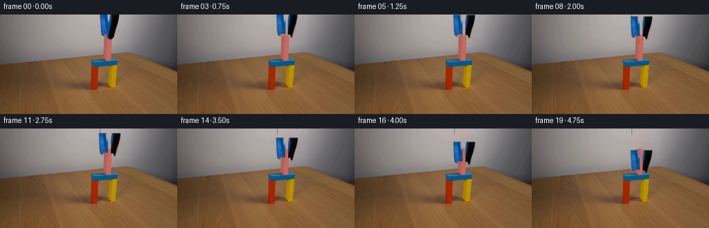
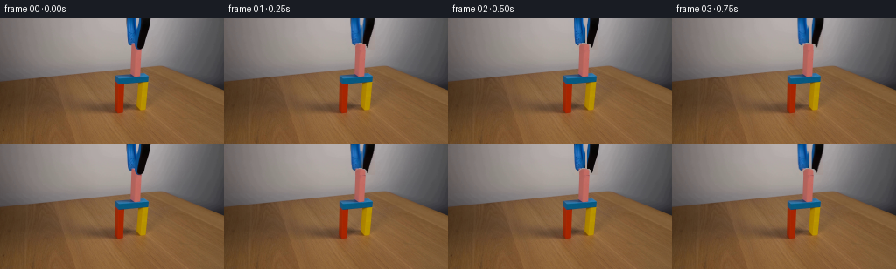
展开代码变化
--- 上一保存版本
+++ 本次保存版本
@@ -11,54 +11,79 @@
N_FRAMES = 20
-def _tool_mask(rgb):
- hsv = cv2.cvtColor(rgb, cv2.COLOR_RGB2HSV)
- height, width = rgb.shape[:2]
- yy, xx = np.indices((height, width))
+def _clean_wall(rgb):
+ clean = rgb.copy()
+ for y in range(36):
+ left = np.median(rgb[y, 137:145], axis=0)
+ right = np.median(rgb[y, 173:181], axis=0)
+ for x in range(145, 172):
+ t = (x - 144.0) / 28.0
+ clean[y, x] = np.round(left * (1.0 - t) + right * t)
- roi = (xx >= 140) & (xx <= 174) & (yy <= 38)
- blue = (
- (hsv[:, :, 0] >= 90)
- & (hsv[:, :, 0] <= 140)
- & (hsv[:, :, 1] >= 40)
- & (hsv[:, :, 2] >= 20)
- )
- black = hsv[:, :, 2] < 72
- shaded_right_jaw = (
- (xx >= 157)
- & (yy <= 36)
- & (hsv[:, :, 2] < 132)
- & (hsv[:, :, 1] < 90)
- )
- pink = (
- (((hsv[:, :, 0] >= 160) | (hsv[:, :, 0] <= 8)))
- & (hsv[:, :, 1] >= 30)
- & (hsv[:, :, 2] >= 72)
- )
-
- mask = roi & (blue | black | shaded_right_jaw) & ~pink
- mask = cv2.morphologyEx(mask.astype(np.uint8), cv2.MORPH_CLOSE, np.ones((3, 3), np.uint8))
- mask = cv2.dilate(mask, np.ones((2, 2), np.uint8), iterations=1)
- return mask
-
-
-def _clean_plate(rgb, mask):
- clean = rgb.copy()
- inpaint_mask = cv2.dilate(mask, np.ones((3, 3), np.uint8), iterations=1)
- clean = cv2.inpaint(clean, inpaint_mask, 5, cv2.INPAINT_TELEA)
-
- # The wall is smooth; a restrained low-pass pass removes inpainting streaks.
- wall_region = inpaint_mask > 0
- soft = cv2.GaussianBlur(clean, (0, 0), 1.4)
- clean[wall_region] = soft[wall_region]
+ # Carry a little of the source grain into the rebuilt wall patch.
+ for y in range(36):
+ grain = rgb[y, 98:125].astype(np.int16) - cv2.GaussianBlur(
+ rgb[y, 98:125].astype(np.float32), (0, 0), 1.0
+ ).astype(np.int16)
+ for x in range(145, 172):
+ clean[y, x] = np.clip(clean[y, x].astype(np.int16) + grain[(x - 145) % 27], 0, 255)
return clean
-def _soft_alpha(mask):
- alpha = cv2.GaussianBlur(mask.astype(np.float32), (0, 0), 0.55)
- alpha = np.clip(alpha, 0.0, 1.0)
- alpha[mask > 0] = np.maximum(alpha[mask > 0], 0.82)
- return alpha
+def _block_alpha(shape):
+ height, width = shape
+ scale = 8
+ mask = Image.new("L", (width * scale, height * scale), 0)
+ from PIL import ImageDraw
+
+ draw = ImageDraw.Draw(mask)
+ draw.rounded_rectangle(
+ (150 * scale, 29 * scale, 162 * scale, 75 * scale),
+ radius=4.5 * scale,
+ fill=255,
+ )
+ mask = mask.resize((width, height), Image.Resampling.LANCZOS)
+ return np.asarray(mask, dtype=np.float32) / 255.0
+
+
+def _reconstruct_block(rgb, alpha):
+ block = rgb.copy()
+ for y in range(29, 36):
+ block[y] = rgb[min(y + 8, 73)]
+
+ # A slightly brighter top edge reads as the rounded, upward-facing surface.
+ for y in range(29, 32):
+ lift = np.array([8, 4, 2], dtype=np.int16)[y - 29]
+ block[y] = np.clip(block[y].astype(np.int16) + lift, 0, 255)
+ return block
+
+
+def _tool_alpha(rgb, clean, block_alpha):
+ height, width = rgb.shape[:2]
+ yy, xx = np.indices((height, width))
+ hsv = cv2.cvtColor(rgb, cv2.COLOR_RGB2HSV)
+ difference = np.max(np.abs(rgb.astype(np.int16) - clean.astype(np.int16)), axis=2)
+
+ left_region = ((xx >= 145) & (xx <= 157) & (yy <= 29)) | (
+ (xx >= 148) & (xx <= 157) & (yy > 29) & (yy <= 35)
+ )
+ right_region = ((xx >= 158) & (xx <= 171) & (yy <= 28)) | (
+ (xx >= 157) & (xx <= 164) & (yy > 28) & (yy <= 36)
+ )
+ colored_or_dark = (
+ ((hsv[:, :, 0] >= 84) & (hsv[:, :, 0] <= 166) & (hsv[:, :, 1] >= 32))
+ | (hsv[:, :, 2] < 96)
+ | (difference >= 16)
+ )
+ alpha = np.clip((difference.astype(np.float32) - 3.0) / 16.0, 0.0, 1.0)
+ alpha *= colored_or_dark.astype(np.float32)
+ alpha *= (left_region | right_region).astype(np.float32)
+ alpha *= (block_alpha < 0.04).astype(np.float32)
+ alpha = cv2.GaussianBlur(alpha, (0, 0), 0.38)
+
+ left = alpha * (xx < 158)
+ right = alpha * (xx >= 158)
+ return left, right
def _shift_layer(rgb, alpha, dx, dy):
@@ -120,16 +145,11 @@
def build_frames():
source = np.asarray(Image.open(CASE_DIR / "first_frame.png").convert("RGB"))
- mask = _tool_mask(source)
- background = _clean_plate(source, mask)
- alpha = _soft_alpha(mask)
-
- left_mask = mask.copy()
- left_mask[:, 158:] = 0
- right_mask = mask.copy()
- right_mask[:, :158] = 0
- left_alpha = _soft_alpha(left_mask)
- right_alpha = _soft_alpha(right_mask)
+ block_alpha = _block_alpha(source.shape[:2])
+ background = _clean_wall(source)
+ block = _reconstruct_block(source, block_alpha)
+ background = _composite(background, block, block_alpha)
+ left_alpha, right_alpha = _tool_alpha(source, background, block_alpha)
jaw_open, lift = _timeline()
frames = np.empty((N_FRAMES, source.shape[0], source.shape[1], 3), dtype=np.uint8)
候选 03播放与检查图
点击播放 · 原生 RGB 像素
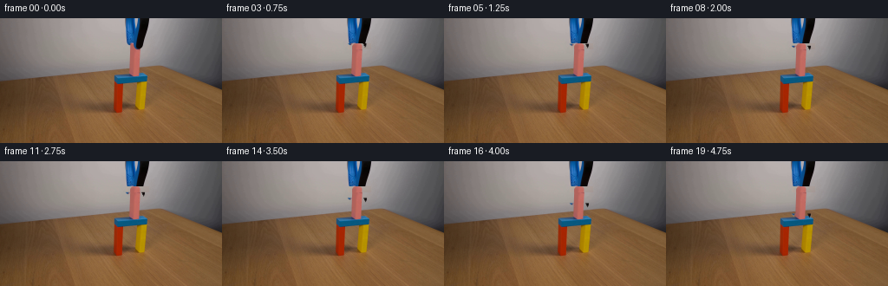
展开代码变化
--- 上一保存版本
+++ 本次保存版本
@@ -56,6 +56,21 @@
lift = np.array([8, 4, 2], dtype=np.int16)[y - 29]
block[y] = np.clip(block[y].astype(np.int16) + lift, 0, 255)
return block
+
+
+def _static_plate(rgb):
+ alpha = _block_alpha(rgb.shape[:2])
+ wall = _clean_wall(rgb)
+ block = _reconstruct_block(rgb, alpha)
+ plate = rgb.copy()
+ for y in range(29, 37):
+ a = alpha[y, :, None]
+ plate[y] = np.clip(
+ wall[y].astype(np.float32) * (1.0 - a) + block[y].astype(np.float32) * a,
+ 0,
+ 255,
+ ).astype(np.uint8)
+ return plate
def _tool_alpha(rgb, clean, block_alpha):
@@ -146,9 +161,7 @@
def build_frames():
source = np.asarray(Image.open(CASE_DIR / "first_frame.png").convert("RGB"))
block_alpha = _block_alpha(source.shape[:2])
- background = _clean_wall(source)
- block = _reconstruct_block(source, block_alpha)
- background = _composite(background, block, block_alpha)
+ background = _static_plate(source)
left_alpha, right_alpha = _tool_alpha(source, background, block_alpha)
jaw_open, lift = _timeline()
候选 04播放与检查图
点击播放 · 原生 RGB 像素
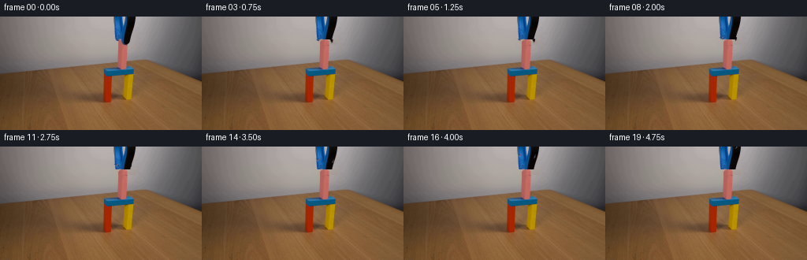
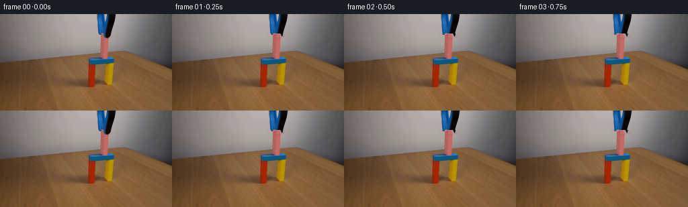
展开代码变化
--- 上一保存版本
+++ 本次保存版本
@@ -176,14 +176,14 @@
combined_alpha = np.clip(
cv2.warpAffine(
left_alpha,
- np.array([[1, 0, -opening], [0, 1, dy]], dtype=np.float32),
+ np.array([[1, 0, -opening], [0, 1, -dy]], dtype=np.float32),
(source.shape[1], source.shape[0]),
borderMode=cv2.BORDER_CONSTANT,
borderValue=0,
)
+ cv2.warpAffine(
right_alpha,
- np.array([[1, 0, opening], [0, 1, dy]], dtype=np.float32),
+ np.array([[1, 0, opening], [0, 1, -dy]], dtype=np.float32),
(source.shape[1], source.shape[0]),
borderMode=cv2.BORDER_CONSTANT,
borderValue=0,
@@ -193,8 +193,8 @@
)
canvas = _shadow(canvas, combined_alpha, 1.8, 1.4)
- left_rgb, left_a = _shift_layer(source, left_alpha, -opening, dy)
- right_rgb, right_a = _shift_layer(source, right_alpha, opening, dy)
+ left_rgb, left_a = _shift_layer(source, left_alpha, -opening, -dy)
+ right_rgb, right_a = _shift_layer(source, right_alpha, opening, -dy)
canvas = _composite(canvas, left_rgb, left_a)
canvas = _composite(canvas, right_rgb, right_a)
frames[index] = canvas
可观测工具轨迹
实际执行的命令与返回图片。
命令 1exit 0
/bin/bash -c "pwd && rg --files -g '"'!*'"\\.git*' | sed -n '1,200p'"
命令 2exit 0
/bin/bash -c "printf '%s\\n' '--- prompt.txt ---'; sed -n '1,240p' prompt.txt; printf '%s\\n' '--- GENERATION_RULES.md ---'; sed -n '1,320p' GENERATION_RULES.md"
命令 3exit 0
/bin/bash -c "file first_frame.png; identify first_frame.png 2>/dev/null || true; find . -maxdepth 2 -type f -printf '%p %s bytes\\n' | sort"
命令 4exit 0
/bin/bash -c "python - <<'PY'
from PIL import Image
import numpy as np
im=Image.open('first_frame.png').convert('RGB')
print(im.size, np.asarray(im).dtype, np.asarray(im).min(), np.asarray(im).max())
try:
import cv2
print('cv2', cv2.__version__)
except Exception as e: print('no cv2', e)
try:
import scipy
print('scipy', scipy.__version__)
except Exception as e: print('no scipy', e)
PY
sed -n '1,260p' artifact_io.py
sed -n '1,260p' player_template.html"命令 5exit 0
/bin/bash -c "python - <<'PY'
from PIL import Image
im=Image.open('first_frame.png').convert('RGB')
im.resize((1024,576),Image.Resampling.NEAREST).save('.tmp/first_zoom.png')
im.crop((115,0,200,100)).resize((680,800),Image.Resampling.NEAREST).save('.tmp/action_zoom.png')
PY"命令 6exit 0
/bin/bash -c "python - <<'PY'
from PIL import Image
import numpy as np, cv2
im=np.array(Image.open('first_frame.png').convert('RGB'))
# dominant quantized colors in action region
crop=im[0:120,115:195]
q=(crop//8)*8
cols,counts=np.unique(q.reshape(-1,3),axis=0,return_counts=True)
for i in np.argsort(counts)[-30:][::-1]: print(tuple(cols[i]), int(counts[i]))
print('HSV colored pixel ranges by hue sat val')
hsv=cv2.cvtColor(im,cv2.COLOR_RGB2HSV)
for name,mask in [('blue',(hsv[:,:,0]>90)&(hsv[:,:,0]<130)&(hsv[:,:,1]>100)),('pink',(hsv[:,:,0]>165)&(hsv[:,:,1]>40)),('orange',(hsv[:,:,0]>0)&(hsv[:,:,0]<20)&(hsv[:,:,1]>100)),('yellow',(hsv[:,:,0]>20)&(hsv[:,:,0]<40)&(hsv[:,:,1]>100))]:
ys,xs=np.where(mask); print(name, len(xs), (xs.min(),xs.max(),ys.min(),ys.max()) if len(xs) else None)
PY"命令 7exit 0
/bin/bash -c "python - <<'PY'
from PIL import Image
im=Image.open('first_frame.png').convert('RGB')
# make coordinate grid zoom
z=im.crop((120,0,195,100)).resize((750,1000),Image.Resampling.NEAREST)
from PIL import ImageDraw
d=ImageDraw.Draw(z)
for x in range(0,76,5):
d.line((x*10,0,x*10,1000),fill=(0,255,0),width=1)
d.text((x*10+2,2),str(x+120),fill=(0,255,0))
for y in range(0,101,5):
d.line((0,y*10,750,y*10),fill=(0,255,0),width=1)
d.text((2,y*10+2),str(y),fill=(0,255,0))
z.save('.tmp/grid.png')
PY"命令 8exit 0
/bin/bash -c "python - <<'PY'
from PIL import Image
import numpy as np, cv2
im=np.array(Image.open('first_frame.png').convert('RGB'))
h,w,_=im.shape
hsv=cv2.cvtColor(im,cv2.COLOR_RGB2HSV)
y,x=np.indices((h,w))
roi=(x>=135)&(x<=185)&(y<70)
blue=(hsv[:,:,0]>=90)&(hsv[:,:,0]<=135)&(hsv[:,:,1]>=55)&roi
dark=(hsv[:,:,2]<105)&roi
pink=((hsv[:,:,0]>=165)|(hsv[:,:,0]<=8))&(hsv[:,:,1]>=35)&(hsv[:,:,2]>90)&roi
# mask combining blue/dark but exclude beam y>=62
m=(blue|dark)&(y<62)
# likely right jaw includes some gray: threshold and x>=157 y<57
gray=(hsv[:,:,1]<60)&(hsv[:,:,2]<150)&(hsv[:,:,2]>60)&(x>=157)&(x<=178)&(y<57)
m |= gray
# clean, close then dilate edge
m=(m.astype(np.uint8)*255)
m=cv2.morphologyEx(m,cv2.MORPH_CLOSE,np.ones((3,3),np.uint8))
# don't dilate whole due to noise? dilate 1
m=cv2.dilate(m,np.ones((2,2),np.uint8),iterations=1)
# combine labels
out=im.copy(); out[m>0]=[255,0,255]; out[pink]=[0,255,0]
Image.fromarray(out).resize((1024,576),Image.Resampling.NEAREST).save('.tmp/mask_overlay.png')
Image.fromarray(m).save('.tmp/toolmask.png')
print('mask count', (m>0).sum(),'pink',pink.sum(), 'blue',blue.sum())
PY"命令 9exit 0
/bin/bash -c "python - <<'PY'
from PIL import Image
import numpy as np
im=np.array(Image.open('first_frame.png').convert('RGB'))
# list row segments for approximate geometry using color classifications
hsv=None
try: import cv2; hsv=cv2.cvtColor(im,cv2.COLOR_RGB2HSV)
except: pass
for y in range(0,120,4):
row=im[y]
# segments where differs enough from local bg/table based saturation or darkness/blue
sat=row.max(1)-row.min(1)
m=(sat>35)|(row.max(1)<75)
# segments
d=np.diff(np.r_[False,m,False].astype(int)); starts=np.where(d==1)[0]; ends=np.where(d==-1)[0]
segs=[(int(a),int(b-1)) for a,b in zip(starts,ends) if b-a>=2]
print(f'{y:3}',segs[:12])
PY"命令 10exit 0
/bin/bash -c "python - <<'PY'
from PIL import Image
import numpy as np, cv2
im=np.array(Image.open('first_frame.png').convert('RGB'))
for y in range(20,82):
vals=[]
for x in [145,148,149,150,151,152,153,154,155,156,157,158,159,160,161,162,163,165,170]:
r,g,b=im[y,x]; vals.append(f'{x}:{r:02x}{g:02x}{b:02x}')
print(f'{y:02d}', ' '.join(vals))
PY"命令 11exit 0
/bin/bash -c "python generate.py && python - <<'PY'
from PIL import Image
import numpy as np
f=np.asarray(Image.open('frames/00.png').convert('RGB'))
s=np.asarray(Image.open('first_frame.png').convert('RGB'))
print('first identical:', np.array_equal(f,s))
print('frames:',len(__import__('glob').glob('frames/*.png')))
PY"命令 12exit 0
/bin/bash -c "python - <<'PY'
from PIL import Image
import numpy as np
for i in [0,1,2,4,8,12,16,19]:
im=Image.open(f'frames/{i:02d}.png').crop((130,0,185,90)).resize((440,720),Image.Resampling.NEAREST)
im.save(f'.tmp/f{i:02d}.png')
# clean plate debug by importing
import generate
s=np.asarray(Image.open('first_frame.png').convert('RGB'))
m=generate._tool_mask(s); bg=generate._clean_plate(s,m)
Image.fromarray(bg).crop((130,0,185,90)).resize((440,720),Image.Resampling.NEAREST).save('.tmp/bg.png')
Image.fromarray((m*255)).crop((130,0,185,90)).resize((440,720),Image.Resampling.NEAREST).save('.tmp/m.png')
PY"命令 13exit 0
/bin/bash -c "python - <<'PY'
from PIL import Image
import numpy as np
for i in [0,2,4,8,12,16,19]:
a=np.asarray(Image.open(f'frames/{i:02d}.png').convert('RGB'))
s=np.asarray(Image.open('first_frame.png').convert('RGB'))
d=np.max(np.abs(a.astype(int)-s.astype(int)),axis=2)
ys,xs=np.where(d>8)
print(i, 'bbox changed', (xs.min(),ys.min(),xs.max(),ys.max()) if len(xs) else None, 'n',len(xs))
PY"命令 14exit 0
/bin/bash -c "python generate.py && python - <<'PY'
from PIL import Image
import numpy as np, generate
s=np.asarray(Image.open('first_frame.png').convert('RGB'))
a=generate._block_alpha(s.shape[:2]); bg=generate._clean_wall(s); block=generate._reconstruct_block(s,a); bg=generate._composite(bg,block,a)
la,ra=generate._tool_alpha(s,bg,a)
Image.fromarray(bg).crop((125,0,190,95)).resize((520,760),Image.Resampling.NEAREST).save('.tmp/bg2.png')
Image.fromarray((np.clip(la+ra,0,1)*255).astype(np.uint8)).crop((125,0,190,95)).resize((520,760),Image.Resampling.NEAREST).save('.tmp/m2.png')
print('first same',np.array_equal(np.asarray(Image.open('frames/00.png')),s))
print('alpha n',np.count_nonzero(la),np.count_nonzero(ra), 'sum', (la+ra).sum())
PY"命令 15exit 0
/bin/bash -c "python - <<'PY'
from PIL import Image
import numpy as np
for i in [1,2,3,4,8,12,16,19]:
Image.open(f'frames/{i:02d}.png').crop((130,0,185,95)).resize((440,760),Image.Resampling.NEAREST).save(f'.tmp/n{i:02d}.png')
PY"命令 16exit 0
/bin/bash -c "python - <<'PY'
from PIL import Image
im=Image.open('first_frame.png').crop((130,0,185,95)).resize((440,760),Image.Resampling.NEAREST)
im.save('.tmp/sourcecrop.png')
PY"命令 17exit 0
/bin/bash -c "python - <<'PY'
from PIL import Image
import numpy as np, cv2, generate
s=np.asarray(Image.open('first_frame.png').convert('RGB'))
a=generate._block_alpha(s.shape[:2]); bg=generate._clean_wall(s); block=generate._reconstruct_block(s,a); bg=generate._composite(bg,block,a); la,ra=generate._tool_alpha(s,bg,a)
# coverage of source tool pixels by alpha at various thresh
hsv=cv2.cvtColor(s,cv2.COLOR_RGB2HSV); yy,xx=np.indices(s.shape[:2])
roi=(xx>=145)&(xx<=171)&(yy<=35)
col=((hsv[:,:,0]>=84)&(hsv[:,:,0]<=166)&(hsv[:,:,1]>=32))|(hsv[:,:,2]<96)
m=roi&col&(a<0.04)
alpha=la+ra
print('source colored pixels',m.sum(),'covered >.1',(m&(alpha>.1)).sum(),'covered >.5',(m&(alpha>.5)).sum(),'missing', (m&(alpha<.1)).sum())
ys,xs=np.where(m&(alpha<.1))
print('missing bbox', (xs.min(),xs.max(),ys.min(),ys.max()) if len(xs) else None)
# produce per-row coverage
for y in range(0,36):
mm=m[y]; print(y,mm.sum(), (mm&(alpha[y]>.1)).sum())
PY"命令 18exit 0
/bin/bash -c "python - <<'PY'
from PIL import Image
import numpy as np
s=np.asarray(Image.open('first_frame.png').convert('RGB')).astype(int)
for i in [0,1,2,3,4,8,12,16,19]:
a=np.asarray(Image.open(f'frames/{i:02d}.png').convert('RGB')).astype(int)
d=np.abs(a-s)
# only wall background 140:176 y 0:28
print(i, 'mean bg diff',d[:28,140:176].mean(), 'pink diff',d[28:76,149:163].mean())
PY"命令 19exit 0
/bin/bash -c "python - <<'PY'
from PIL import Image
import numpy as np, cv2
for idx in [0,1,2,3,8,19]:
s=np.asarray(Image.open('first_frame.png').convert('RGB'))
a=np.asarray(Image.open(f'frames/{idx:02d}.png').convert('RGB'))
# derive masks pink and colored blocks
for name,im in [('src',s),('dst',a)]:
hsv=cv2.cvtColor(im,cv2.COLOR_RGB2HSV); y,x=np.indices(im.shape[:2])
pink=(((hsv[:,:,0]>160)|(hsv[:,:,0]<8))&(hsv[:,:,1]>28)&(hsv[:,:,2]>80)&(y<80)&(x>130)&(x<180))
ys,xs=np.where(pink)
print(idx,name,len(xs),(xs.min(),xs.max(),ys.min(),ys.max()) if len(xs) else None)
PY"命令 20exit 0
/bin/bash -c "python - <<'PY'
from PIL import Image
import numpy as np
# print color of selected points at source/frame19 and find where block pink disappears
for idx in [0,1,8,19]:
im=np.asarray(Image.open(f'frames/{idx:02d}.png').convert('RGB'))
print('frame',idx)
for y in [29,30,31,32,34,36,40,50,60,68,72,74,76,78]:
print(y, [tuple(im[y,x]) for x in [150,151,153,156,158,160]])
PY"命令 21exit 0
/bin/bash -c "python generate.py && python - <<'PY'
from PIL import Image
import numpy as np
s=np.asarray(Image.open('first_frame.png').convert('RGB')).astype(int)
for i in [0,1,2,3,4,8,12,16,19]:
a=np.asarray(Image.open(f'frames/{i:02d}.png').convert('RGB')).astype(int)
d=np.abs(a-s)
print(i, 'bg',round(d[:28,140:176].mean(),2),'pink',round(d[36:76,149:163].mean(),2),'gate',round(d[67:90,135:175].mean(),2))
PY"命令 22exit 0
/bin/bash -c "python - <<'PY'
from PIL import Image
import numpy as np
for i in [1,2,3,4,8,12,16,19]:
Image.open(f'frames/{i:02d}.png').crop((130,0,185,95)).resize((440,760),Image.Resampling.NEAREST).save(f'.tmp/p{i:02d}.png')
PY"命令 23exit 0
/bin/bash -c "sed -n '1,320p' generate.py"
命令 24exit 0
/bin/bash -c "find . -maxdepth 2 -type f -printf '%p %s\\n' | sort | sed -n '1,200p'"
命令 25exit 0
/bin/bash -c 'cat task_spec.json 2>/dev/null || true; git status --short 2>/dev/null || true'
命令 26exit 0
/bin/bash -c "python generate.py && python - <<'PY'
from PIL import Image
import numpy as np, glob
s=np.asarray(Image.open('first_frame.png').convert('RGB'))
f=np.asarray(Image.open('frames/00.png').convert('RGB'))
print('shape',len(glob.glob('frames/*.png')),'first identical',np.array_equal(f,s))
for i in [1,2,3,4,8,12,16,19]:
a=np.asarray(Image.open(f'frames/{i:02d}.png').convert('RGB')).astype(int)
d=np.max(np.abs(a-s.astype(int)),axis=2)
ys,xs=np.where(d>8)
print(i,(xs.min(),ys.min(),xs.max(),ys.max()) if len(xs) else None)
PY"命令 27exit 0
/bin/bash -c "python - <<'PY'
from PIL import Image
for i in [1,2,4,8,12,16,19]:
Image.open(f'frames/{i:02d}.png').crop((135,0,180,85)).resize((450,850),Image.Resampling.NEAREST).save(f'.tmp/q{i:02d}.png')
PY"命令 28exit 0
/bin/bash -c "python - <<'PY'
from PIL import Image
import numpy as np
s=np.asarray(Image.open('first_frame.png').convert('RGB'))
for i in [0,1,2,4,8,12,16,19]:
a=np.asarray(Image.open(f'frames/{i:02d}.png').convert('RGB'))
d=np.max(np.abs(a.astype(int)-s.astype(int)),axis=2)
print(i,'changed>3 in pink region',int((d[29:76,149:163]>3).sum()),'changed>3 in gate',int((d[67:90,132:175]>3).sum()))
PY"命令 29exit 0
/bin/bash -c "python - <<'PY'
from PIL import Image
import numpy as np
s=np.asarray(Image.open('first_frame.png').convert('RGB')).astype(int)
a=np.asarray(Image.open('frames/08.png').convert('RGB')).astype(int)
d=np.max(np.abs(a-s),axis=2)
for y in range(27,38):
xs=np.where(d[y,140:175]>3)[0]+140
print(y, xs.tolist())
PY"命令 30exit 0
/bin/bash -c "python - <<'PY'
from PIL import Image
import numpy as np
s=np.asarray(Image.open('first_frame.png').convert('RGB'))
for i in [1,8,19]:
a=np.asarray(Image.open(f'frames/{i:02d}.png').convert('RGB'))
print('frame',i)
for y in range(29,36):
print(y, tuple(s[y,153]), tuple(a[y,153]))
PY"命令 31exit 0
/bin/bash -c "python - <<'PY'
from pathlib import Path
import hashlib
import numpy as np
from PIL import Image
root = Path('.')
files = sorted((root / 'frames').glob('*.png'))
assert len(files) == 20, len(files)
frames = np.stack([np.asarray(Image.open(p).convert('RGB')) for p in files])
assert frames.shape == (20, 144, 256, 3), frames.shape
assert frames.dtype == np.uint8, frames.dtype
source = np.asarray(Image.open('first_frame.png').convert('RGB'))
assert np.array_equal(frames[0], source)
packed = np.load('pixels.npz')['pixels']
assert packed.shape == (144, 256, 20), packed.shape
restored = np.stack([
np.stack([(packed[:, :, i] >> 16) & 255, (packed[:, :, i] >> 8) & 255, packed[:, :, i] & 255], axis=2).astype(np.uint8)
for i in range(20)
])
assert np.array_equal(restored, frames)
print('contract: PASS')
print('frames:', frames.shape, 'fps: 4', 'duration: 5.0s')
print('first frame sha256:', hashlib.sha256(files[0].read_bytes()).hexdigest())
print('source sha256: ', hashlib.sha256(Path('first_frame.png').read_bytes()).hexdigest())
print('index.html bytes:', Path('index.html').stat().st_size)
PY
python generate.py
python - <<'PY'
from pathlib import Path
import hashlib
print('deterministic regenerate: PASS')
print('final frame hash:', hashlib.sha256(Path('frames/19.png').read_bytes()).hexdigest())
PY"命令 32exit 0
/bin/bash -c "ffmpeg -version | sed -n '1,3p'"
命令 33exit 0
/bin/bash -c "python - <<'PY'
try:
import imageio
print('imageio', imageio.__version__)
except Exception as e: print('no imageio',e)
try:
import imageio_ffmpeg
print('imageio_ffmpeg',imageio_ffmpeg.get_ffmpeg_exe())
except Exception as e: print('no imageio_ffmpeg',e)
try:
import av
print('av',av.__version__)
except Exception as e: print('no av',e)
PY"命令 34exit 0
/bin/bash -c "python - <<'PY'
from pathlib import Path
import av
import numpy as np
from PIL import Image
frames=[np.asarray(Image.open(p).convert('RGB')) for p in sorted(Path('frames').glob('*.png'))]
out=av.open('video.mp4','w')
stream=out.add_stream('libx264',rate=4)
stream.width=256
stream.height=144
stream.pix_fmt='yuv420p'
stream.options={'crf':'12','preset':'medium'}
for arr in frames:
frame=av.VideoFrame.from_ndarray(arr,format='rgb24')
for packet in stream.encode(frame):
out.mux(packet)
for packet in stream.encode():
out.mux(packet)
out.close()
print('wrote video.mp4',Path('video.mp4').stat().st_size)
PY
python - <<'PY'
import av
c=av.open('video.mp4')
s=c.streams.video[0]
frames=list(c.decode(video=0))
print('decoded',len(frames),frames[0].width,frames[0].height,'rate',s.average_rate)
PY"命令 35exit 0
/bin/bash -c "python - <<'PY'
import av
from pathlib import Path
from PIL import Image
import numpy as np
c=av.open('video.mp4'); s=c.streams.video[0]
imgs=[]
for f in c.decode(video=0):
imgs.append(f.to_ndarray(format='rgb24'))
print(len(imgs), s.average_rate, imgs[0].shape, np.asarray(Image.open('frames/00.png')).shape)
print('first decoded mae',np.abs(imgs[0].astype(int)-np.asarray(Image.open('frames/00.png').convert('RGB')).astype(int)).mean())
print('final decoded mae',np.abs(imgs[-1].astype(int)-np.asarray(Image.open('frames/19.png').convert('RGB')).astype(int)).mean())
PY"命令 36exit 0
/bin/bash -c "python - <<'PY'
from PIL import Image
import numpy as np
frames=[np.asarray(Image.open(f'frames/{i:02d}.png').convert('RGB')) for i in range(20)]
rows=[]
for i in [0,2,4,6,8,10,12,14,16,18]:
crop=Image.fromarray(frames[i][:90,130:180]).resize((200,360),Image.Resampling.NEAREST)
rows.append((i,crop))
sheet=Image.new('RGB',(5*200,2*390),(22,24,28))
from PIL import ImageDraw
d=ImageDraw.Draw(sheet)
for k,(i,crop) in enumerate(rows):
x=(k%5)*200;y=(k//5)*390
d.text((x+5,y+5),f'{i:02d}',fill='white')
sheet.paste(crop,(x,y+30))
sheet.save('.tmp/motion_sheet.png')
PY"命令 37exit 0
/bin/bash -c "python - <<'PY'
from PIL import Image
import numpy as np
for i in [0,1,2,3,4,5,6,8,10,12,14,16,18,19]:
a=np.asarray(Image.open(f'frames/{i:02d}.png').convert('RGB'))
# detect dark tool pixels above y 36
hsv=None
dark=(a[:36,:,0]<80)&(a[:36,:,1]<80)&(a[:36,:,2]<80)
ys,xs=np.where(dark & (np.indices(dark.shape)[1]>130) & (np.indices(dark.shape)[1]<180))
print(i, len(xs), (ys.min(),ys.max()) if len(ys) else None)
PY"命令 38exit 0
/bin/bash -c "python - <<'PY'
from PIL import Image
import numpy as np
for i in [0,1,2,4,8,12,16,19]:
a=np.asarray(Image.open(f'frames/{i:02d}.png').convert('RGB'))
# only jaw tip y 26:36 x145:170 classify non-bg colors/saturation
hsv=__import__('cv2').cvtColor(a,__import__('cv2').COLOR_RGB2HSV)
yy,xx=np.indices(a.shape[:2])
m=((hsv[:,:,0]>=84)&(hsv[:,:,0]<=166)&(hsv[:,:,1]>=32)) | (hsv[:,:,2]<96)
m &= (yy>=20)&(yy<=35)&(xx>=140)&(xx<=175)
ys,xs=np.where(m)
print(i,len(xs), (xs.min(),xs.max(),ys.min(),ys.max()) if len(xs) else None)
PY"命令 39exit 0
/bin/bash -c "python - <<'PY'
import av
from PIL import Image
import numpy as np
c=av.open('video.mp4')
frames=[f.to_ndarray(format='rgb24') for f in c.decode(video=0)]
for idx in [0,4,8,12,16,19]:
Image.fromarray(frames[idx]).save(f'.tmp/v{idx:02d}.png')
print('ok')
PY"视觉工具实际返回图片 1
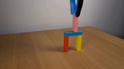
视觉工具实际返回图片 2
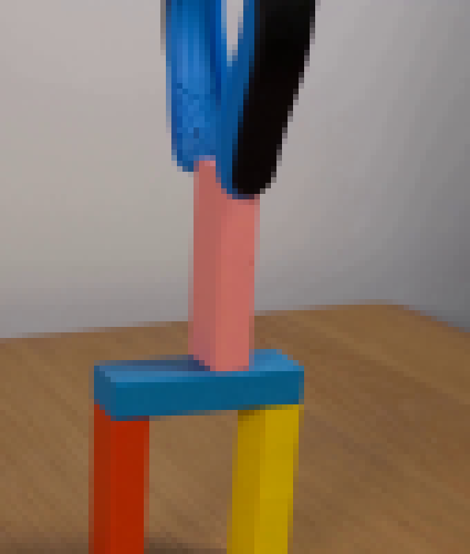
视觉工具实际返回图片 3
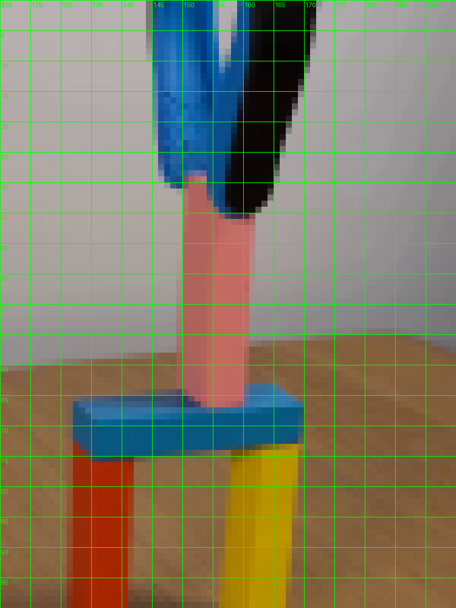
视觉工具实际返回图片 4
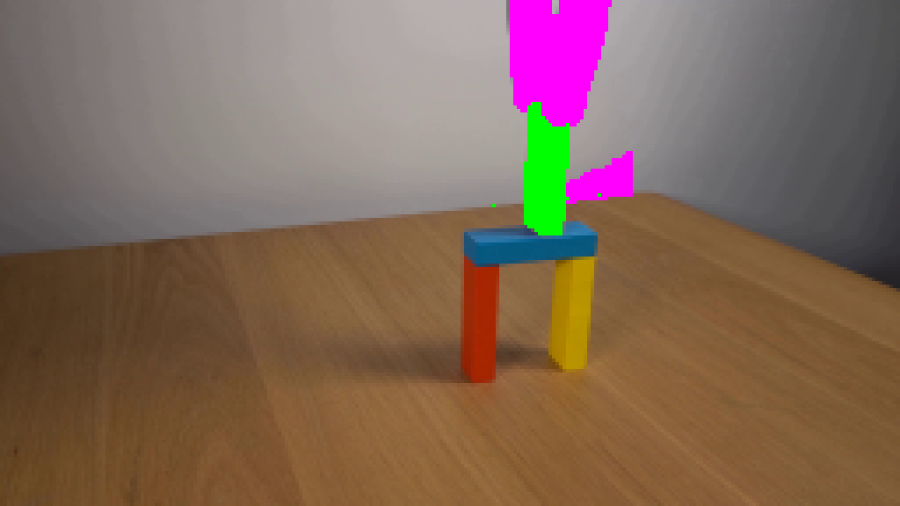
视觉工具实际返回图片 5
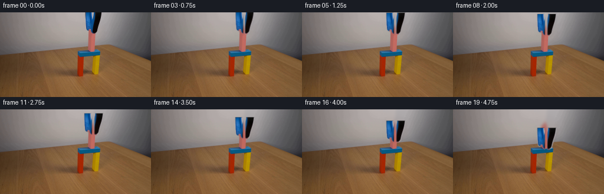
视觉工具实际返回图片 6
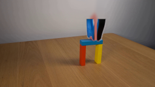
视觉工具实际返回图片 7

视觉工具实际返回图片 8
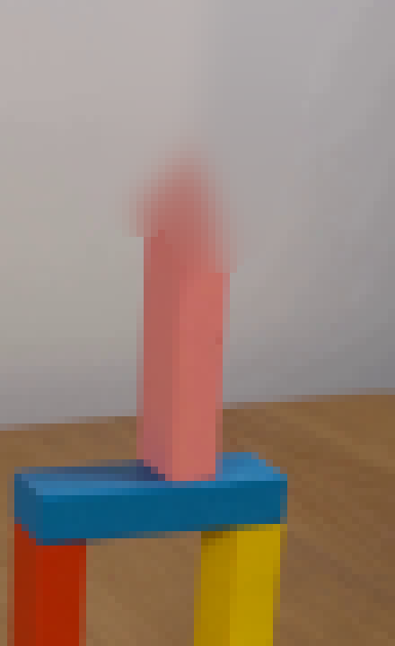
视觉工具实际返回图片 9
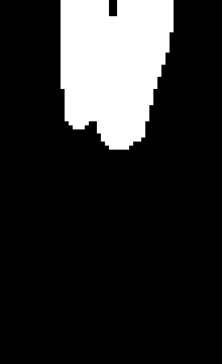
视觉工具实际返回图片 10

视觉工具实际返回图片 11
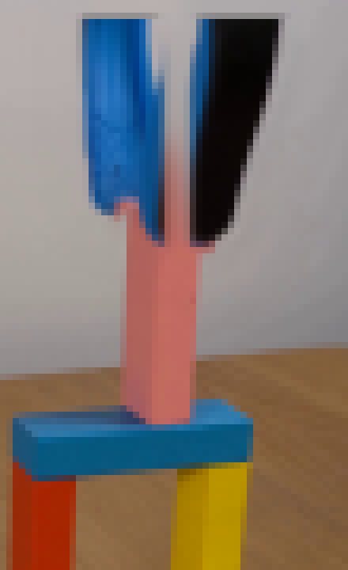
视觉工具实际返回图片 12
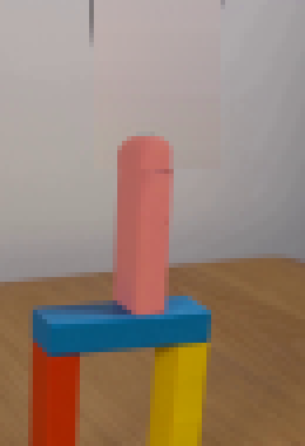
视觉工具实际返回图片 13

视觉工具实际返回图片 14
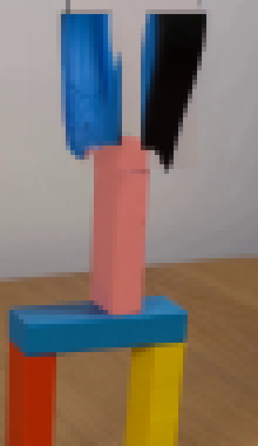
视觉工具实际返回图片 15
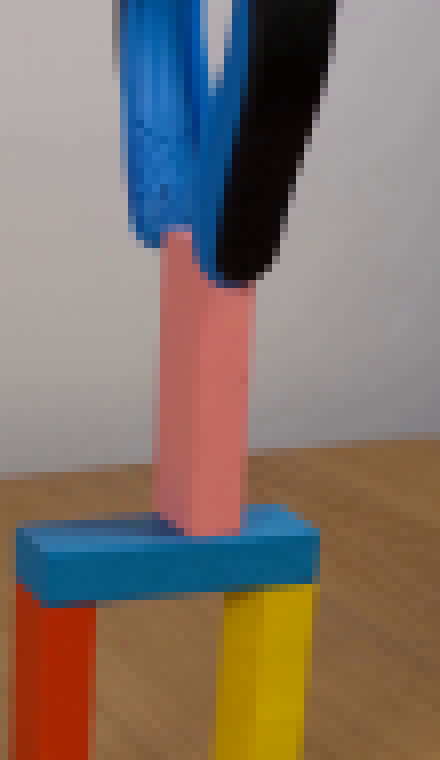
视觉工具实际返回图片 16
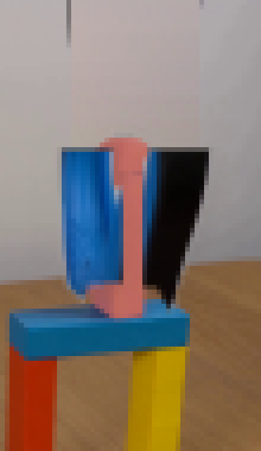
视觉工具实际返回图片 17
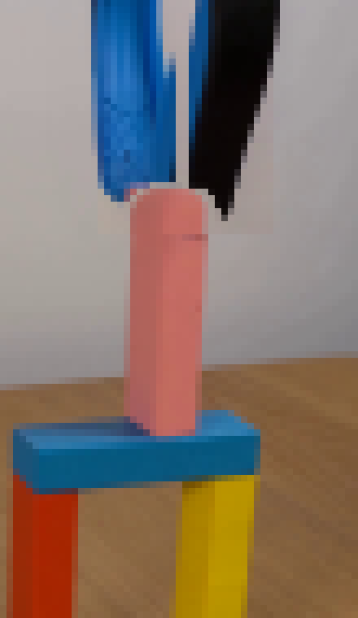
视觉工具实际返回图片 18
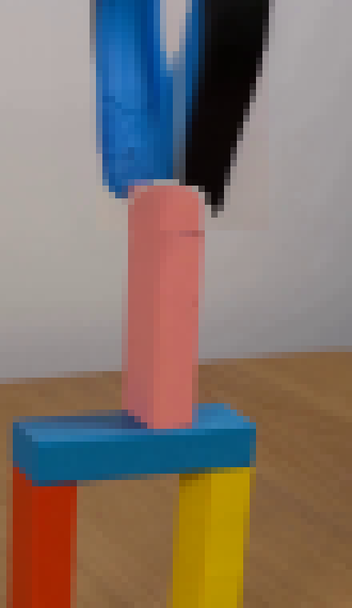
视觉工具实际返回图片 19
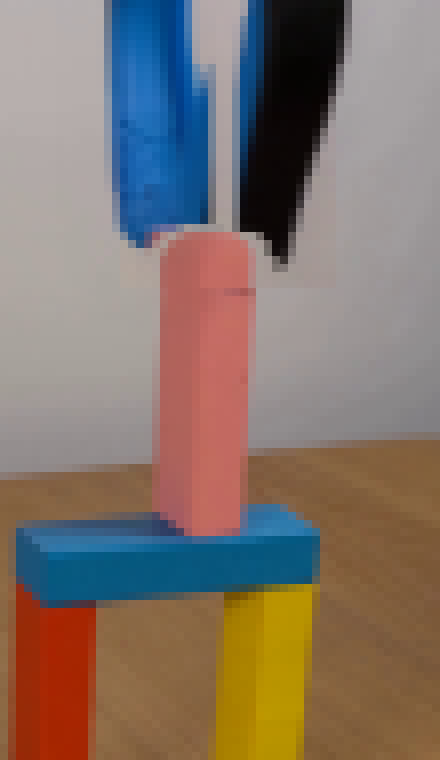
视觉工具实际返回图片 20

视觉工具实际返回图片 21
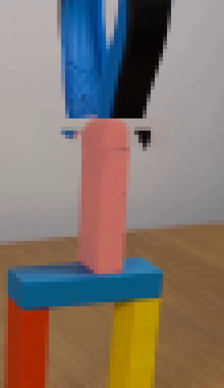
视觉工具实际返回图片 22
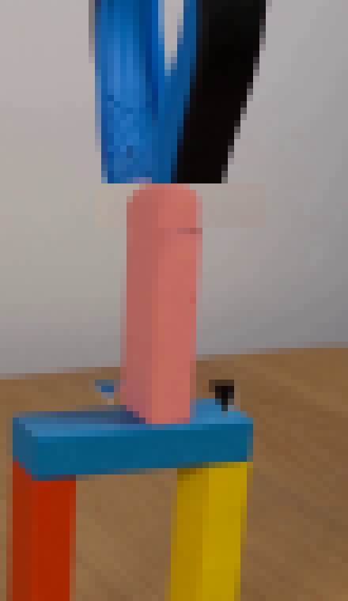
视觉工具实际返回图片 23

视觉工具实际返回图片 24
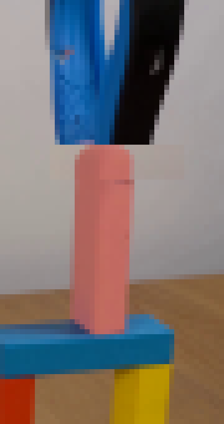
视觉工具实际返回图片 25
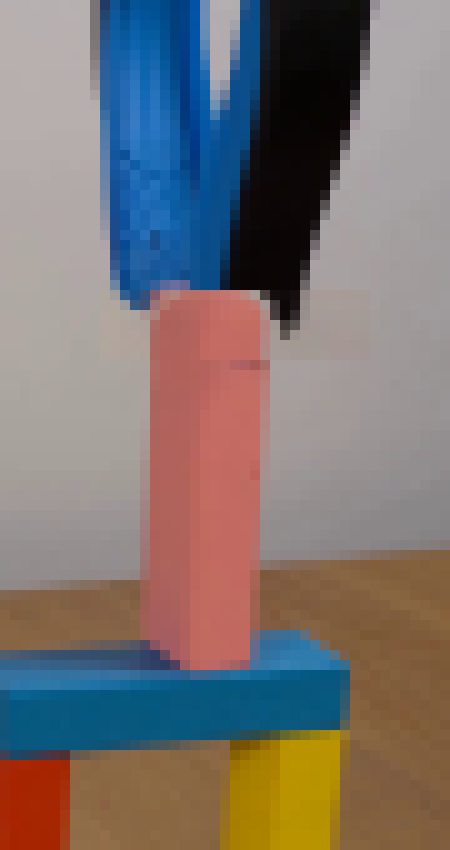
视觉工具实际返回图片 26
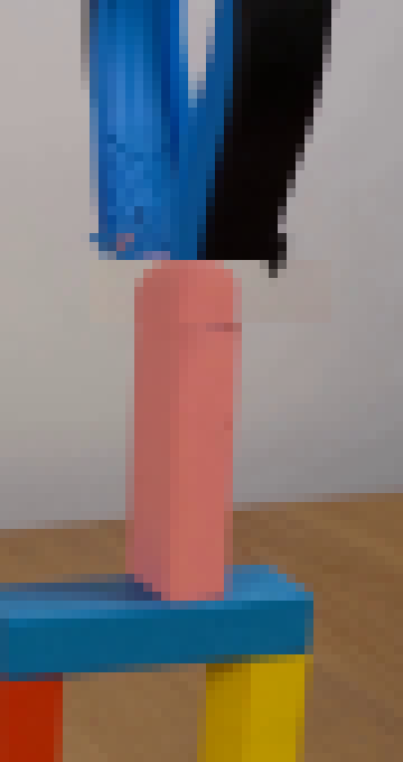
视觉工具实际返回图片 27
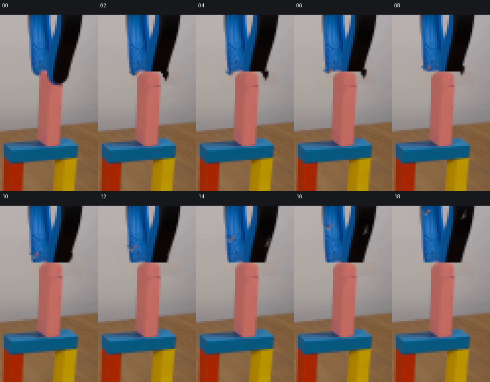
视觉工具实际返回图片 28
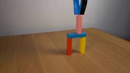
保存候选 4 份；完成命令 39 次；可验证图片返回 28 张。原始 API 响应与完整日志保留在本地。